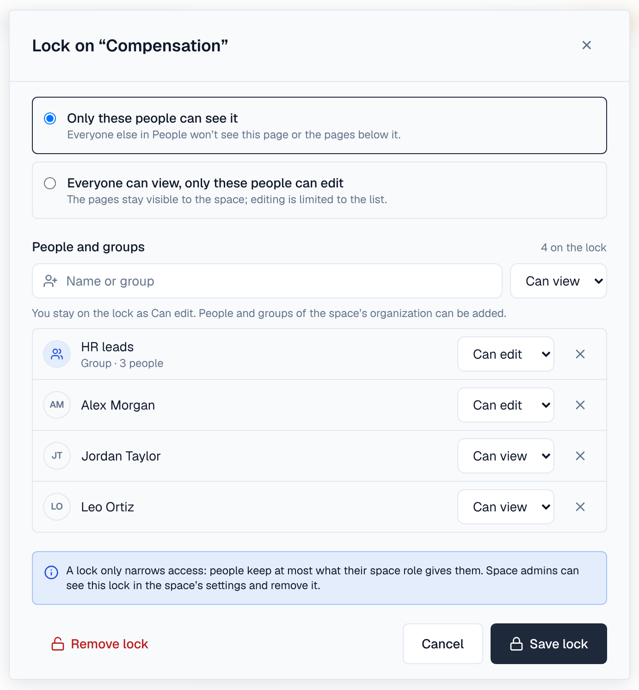
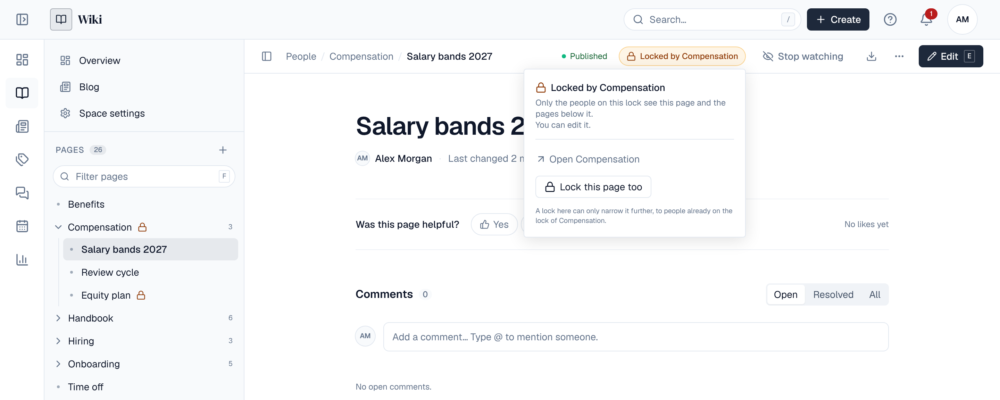
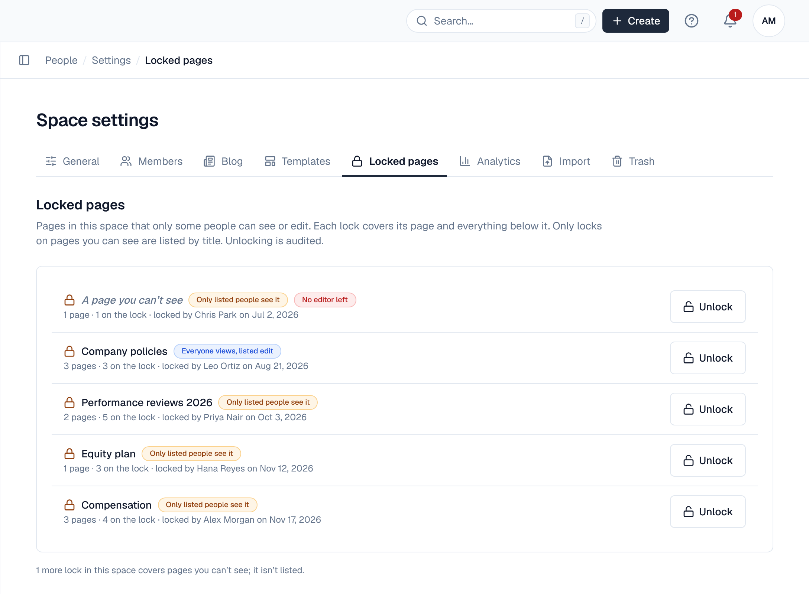

1. Overview
A lock on a page limits who sees it, or who changes it, without changing anyone's role in the space. It covers the page and every page under it, including pages added under it later. There are two kinds:
| Lock | Who sees the pages | Who edits them |
|---|---|---|
| Only these people can see it | Only the people and groups on the lock | Those on the lock as Can edit |
| Everyone can view, only these people can edit | Everyone who can read the space | Those on the lock as Can edit |
A lock only ever narrows what the space allows: someone on a lock as Can edit who is a viewer of the space still only reads. Nobody gets around a lock, super admins included: a super admin can remove a lock from the space's settings, but doesn't see the pages while it is there. Page locks are part of every licence.
2. Locking a page
- Open the page as someone who may edit it and choose ⋯ → Lock page….
- Pick Only these people can see it or Everyone can view, only these people can edit.
- Search for people and groups by name, pick Can view or Can edit, and choose them from the list. You stay on the lock as Can edit yourself, so you can't lock yourself out.
- Save lock.

- People and groups of the space's organization can be put on a lock, up to 200 in all. Searching needs the right to see people's names.
- A group on a lock counts its members as they are now: someone who joins the group sees the pages at once.
- To change a lock, choose Change lock on the page's Locked badge (or ⋯ → Lock page… again). Remove lock in the same dialog takes it off.
3. What a locked page looks like
A locked page carries a Locked badge in the bar at the top; a page under a locked page says Locked by and the page that carries the lock. Choose the badge to see what the lock does and whether you can edit; on the page that carries the lock it also lists who is on it. In the page tree, a lock icon marks the page that carries a lock.

For someone not on an Only these people can see it lock, the pages aren't there at all: not in the page tree, search, labels, the calendar, analytics, alerts, page tree and recently updated blocks, includes, templates or exports. A link to one answers that the page doesn't exist.
4. Locks inside locks
A page under a locked page can have a lock of its own. Then a person needs both: they see the inner pages only if they see the outer ones and the inner lock lets them, and edit them only if they are Can edit on both. So a lock inside another can only narrow it further.
5. Moving and deleting locked pages
- A page moved under a locked page comes under its lock; a page moved out leaves it. A locked page keeps its own lock wherever it goes.
- Deleting a page needs edit rights under every lock in the pages that go with it. Restoring from the trash and deleting for good work the same way.
- Someone who doesn't see a locked page can't give another page its title: titles stay unique in a space.
6. Locked pages in space settings
Space settings → Locked pages lists the space's locks for its admins (and super admins): each locked page, its kind of lock, how many pages it covers and how many people and groups are on it, who locked it and when.

- Only locks on pages you see are listed by title. A lock nobody may edit any more (everyone on it as Can edit left) is listed as A page you can't see with No editor left, so an admin can still remove it.
- Other locks in the space are only counted under the list.
- Unlock removes a lock, with an optional note for the audit log. It never shows the admin the locked pages.
7. Events, audit and API
Locking raises page.lock.create, changing a lock page.lock.update and removing one page.lock.delete (with from_settings and the note when it was removed from the space's settings). They are blocking: policies can refuse them, for example to keep certain spaces from having locked pages, and automation can react to them. Each change is in the audit log (wiki_pages:lock, wiki_pages:lock_update, wiki_pages:unlock).
| Method | Path | Permission | What it does |
|---|---|---|---|
| GET | /api/spaces/{key}/pages/{id}/lock | Read the page | The page's own lock with who is on it, and the lock above it |
| PUT | /api/spaces/{key}/pages/{id}/lock | Edit the page | Lock the page, or change its lock (mode view or edit, members) |
| DELETE | /api/spaces/{key}/pages/{id}/lock | Edit the page | Remove the page's lock |
| GET | /api/spaces/{key}/pages/{id}/lock/candidates | Edit the page, see people | People and groups to put on the lock, by name (q) |
| GET | /api/spaces/{key}/locks | wiki_spaces:locks:manage (space admins) | The space's locked pages |
| POST | /api/spaces/{key}/locks/{lock}/unlock | wiki_spaces:locks:manage (space admins) | Remove a lock from the space's settings, with a note |
During an upgrade from a release without page locks, servers still on the previous release don't know about locks. Upgrade every server before locking pages.